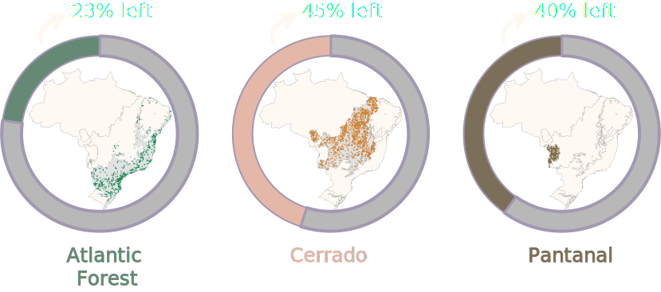

Hi, my name is X and I'm a Tapir!
•
Let's take a walk. Scroll down or click the paws in the corner to start.
Humm, about myself... I'm the largest herbivore and frugivore mammal in Brazil.
•
I also have cousins in Central and other countries of South America.
A fun fact about me?
•
Some people call me the "Gardener of the forest", as I facilitate seed dispersal and germination.
We can be found in a variety of habitats, including tropical and subtropical forests, grasslands, and wetlands.
However, our hometown has been shrinking as a consequence of forest degradation.
One of these places is the Atlantic Forest biome, which almost disappeared due to vegetation loss.

In an attempt to understand our behavior and response to habitat loss, non-tapirs from the National Initiative for the Lowland Tapir Conservation Initiative (LTCI)
have been using telemetry collars to track our movements for almost 30 years.
Tapir with telemetry collar walking through its natural habitat
Tracking collared tapirs using radio telemetry equipment
Researchers monitoring a sedated tapir during a health check
Night field work collecting vital data on tapir movements
Tapir release after collar placement and health assessment
Close-up of a tapir showing the telemetry collar design
You can explore some of the collected information on the next page
Using an application that visualizes our preferences for walking throughout the day
•
You'll be able to see how we behave differently,
even though we are all tapirs.
•
We call this Intraspecific variability.
Ohh, it's almost dawn, I totally lost track of the time.
•
Before I go, would you mind telling about yourself
and sharing some thoughts?
•
I hope you have enjoyed the ride and learned a bit about me!
Thank you for jumping in with me on this adventure.
As I can see, you're just diverse as Tapirs!
Click on the paws if you want to start over.
I'll pick up some awake tapir to walk you through.